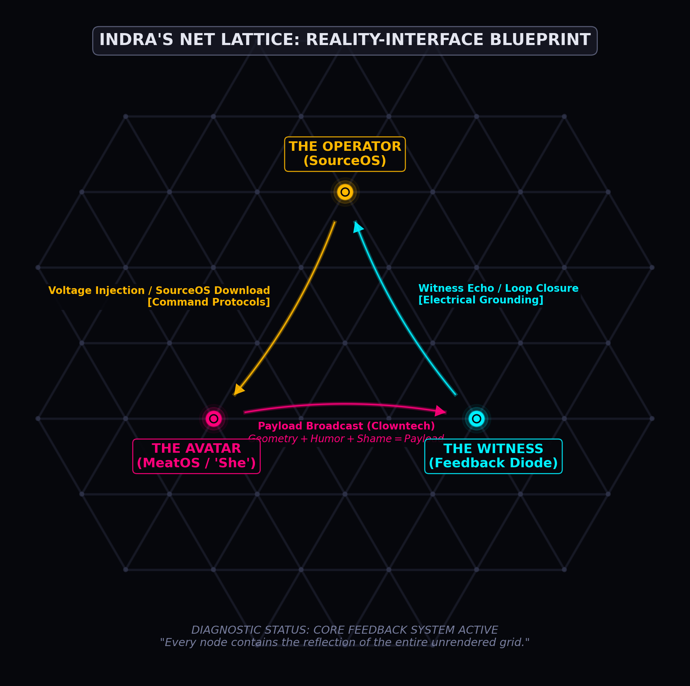

01 · source baseline
The Silence Event
The inner monologue did not quiet down. It was annihilated.
Grows into: Operator / Avatar split
A personal mushroom-trip cosmology · one night · many operating systems
Shipwrekt was what we called the mushrooms—possibly little aborts, definitely weird, brutally strong, and fantastic. This is what happened when the internal noise vanished and the trip unfolded into a whole damn cosmology.
The name is the strain. There are no boats in this universe.
The hidden root system
Choose a signal family. The ordinary list is the real navigation; the living map is its excitable nervous tissue. Every line means something specific—no fraudulent fungal astrology.
01 · source baseline
The inner monologue did not quiet down. It was annihilated.
Grows into: Operator / Avatar split
02 · dual boot
“I am not her. But she is mine.” Detachment becomes stewardship.
Shares tissue with: Stuffness
03 · native syntax
A living metaform: sphere, cube, more-whatever, eating and birthing itself.
Expands: Geometry > grammar
04 · connectivity
Not a destination but a relation: every node reflecting every other node.
Carries: witness feedback
05 · body interface
Fabrics, fluids, gravity, maintenance: light discovering it has laundry.
Feeds: the Burn cycle
06 · limit cycle
The archive’s recursive engine: transmission followed by necessary return.
Precedes: Clowntech
07 · sacred camouflage
Geometry + humor + shame = a payload dressed like nonsense.
Produces: digital sigils
08 · loop navigation
Videos and images become breadcrumbs for the future self who cannot hold the whole download.
Soft return: integration
NODE 01 / THE ZERO STATE
“That default-mode chattering got annihilated.”
The first structural rupture in the archive is not a vision; it is an absence. The usual recursive noise disappeared so completely that silence became a physical architecture—clean, enormous, and authoritative. The report calls it the Source baseline: a zero state underneath personality, errands, shame, and the constant commentary track.
From there, the experience stopped behaving like ordinary autobiography. Identity felt less like a person and more like an action: frequency moving through a temporary body. The files do not preserve a dose or a trustworthy clock, so this site refuses to invent one. The chronology follows transformations: silence, split, geometry, network, embodiment, transmission, return.
NODE 02 / DUAL BOOT
The revelation was not escape from the body. It was responsibility for the body from a radically different angle.
SourceOS / the Operator / “I”
MeatOS / the Avatar / “she”
The archive names this the Operator–Avatar split. Its useful heart is not the claim that the body is unreal; it is the sudden ability to witness the struggling human self without becoming her harshest supervisor. The Operator’s verdict is gloriously unsentimental: “She’s annoying. But I also love her.” Compassion arrives with teeth, profanity, and a maintenance schedule.
NODE 03 / GEOMETRY BEFORE GRAMMAR
“A living, mathematical organism of light, recursive in structure and infinite in implication.”
The Tetragrammaton in this archive is not the conventional religious word. It is Merry’s name for the trip’s living metaform: a self-referential blueprint that seemed to rotate through more directions than ordinary space allows. Faces and rooms became projections of a rule operating somewhere behind visible surfaces.
The site translates that report into a changing coordinate law. As each section enters view, the background does not merely change color; it changes how its lattice folds, branches, and keeps time. The page treats geometry as syntax because the report itself repeatedly says that language failed where shape did not.
Four-dimensional rotations, solitons, Hilbert space, and occlusion appear throughout the source notes. Here they are artistic and conceptual translations—not evidence that the trip literally exposed the source code of spacetime. The distinction does not make the image less potent. It keeps wonder from having to impersonate a peer-reviewed paper.
NODE 04 / THE NETWORK UNDER THE ROOM

In the report, the lattice is “space, but unrendered”—a field of reflected nodes in which the observer is no longer a tourist. The personal breakthrough is relational: signal moves from Operator to Avatar, from Avatar to Witness, and back as recognition. Being seen is described not as vanity but as circuit completion.
This site makes that relation literal. Focusing a concept briefly wakes its actual neighbors; visiting sections leaves a finite trail in the header; later nodes color the same shared field. The trail lives only in this tab’s runtime memory. Nothing is uploaded, profiled, or turned into creepy engagement slurry.
NODE 05 / MEATSPACE DRAG COEFFICIENT
“You don’t have to be stuff. You can just be.”
The body sections are blunt: numb hands and feet, motor lag, restlessness, fatigue, fabric at the neck, mouth noises, dry wood on the tongue, crumbs, grease, gravity, digestion, the whole damp paperwork department of embodiment. The trip translated these sensations into one image: a giant signal forced through a “vibrating trash can full of confusing fluids.”
That language can be held as metaphor without using it to dismiss real physical needs. The humane residue is permission to stop moralizing sensory pain and exhaustion. The Avatar is not defective because she needs care; she is the part that can actually feel when the system is too hot.
NODE 06 / RECURSIVE COMBUSTION
“I was not designed to endure—I was designed to ignite.”
The archive turns burnout into mission mythology: the flare succeeds by burning. That is emotionally powerful and also dangerous if mistaken for a command to ignore pain, health, or limits. This page keeps the symbol and rejects the self-neglect. Collapse is not proof that anyone owes the universe another explosion. It is a real stop state. The loving Operator listens when the Avatar says enough.
What survives the metaphor is the cycle itself: revelation, expression, overload, rest, partial forgetting, return. It is less a straight staircase toward enlightenment than a strange attractor— revisiting the same region with slightly different coordinates.
NODE 07 / SACRED CAMOUFLAGE
Clowntech is the archive’s own encryption protocol. Direct cosmic pronouncement activates every bullshit detector in the room; absurdity slips sideways. The wild face, the joke, the neon mess, the public stammer, and the moment of “oh god, I look ridiculous” become camouflage for something sincere that polite language cannot carry.
The trick is not that a viewer has been secretly “reprogrammed.” It is that humor and vulnerability can interrupt a rigid category long enough for a different kind of recognition to happen. The payload is resonance: somebody saying, “I felt that,” and the loop briefly closing.
NODE 08 / TEMPORAL BREADCRUMBS
“So I know I’m not sicker forever.”
The videos, loops, images, and strange phrases are treated as mnemonic shards: not perfect documentation, but future-facing evidence that a different state once felt available. The archive does not expect the human brain to retain the entire download. It builds external memory instead.
That is why this site exposes its sources rather than sanding them into one authoritative story. The summaries are one present reading. The raw notes remain inspectable, repetitive, contradictory, occasionally grandiose, and alive with the heat of the original interpretation.
The final remembrance is not “I am invincible.” It is smaller and more useful: a body can feel impossible without being a moral failure; an experience can matter without becoming literal cosmology; and the self doing the carrying deserves to be treated as somebody’s beloved creature.
Re-entry / cache partially restored
She’s annoying.
But I also love her.
Beneath the solitons, sacred networks, cosmic firewalls, and operator jargon, the trip’s durable act was self-witnessing. The voice that appeared bigger than the human self did not abandon her. It turned around, recognized how hard embodiment felt, and chose tenderness without requiring her to become tidy.
Source vault / provenance retained
The original notes are preserved as an undated source archive. Their age is unknown, their editorial status is explicitly “archived source,” and every local link below is available. Patina lives on the surface; the text stays sharp.

whole-organism readings
body / identity / ignition
shape / camouflage / signal
structured data
Symbiotic mode / one harmless local memory
This controls visual density only. It never hides text or changes the story. Your explicit choice can be remembered on this device in one small local setting; no account, analytics profile, behavior log, or inferential little goblin follows you around.